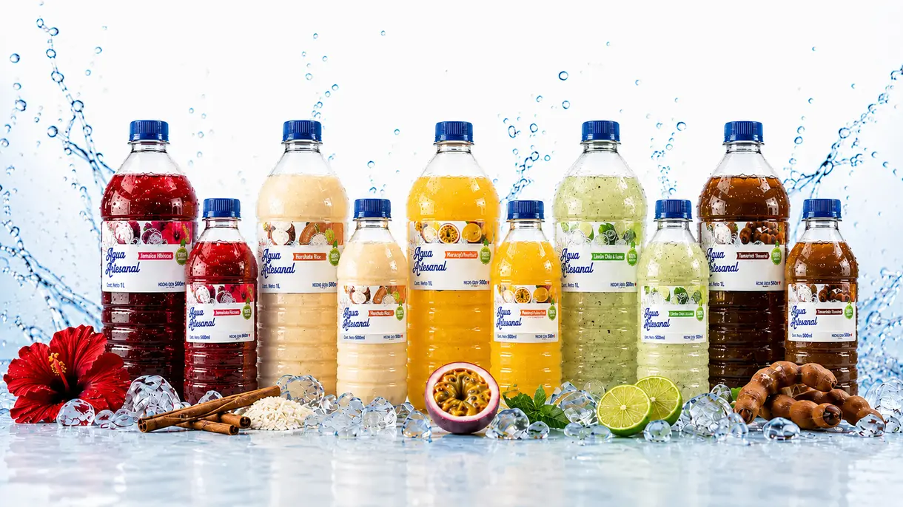
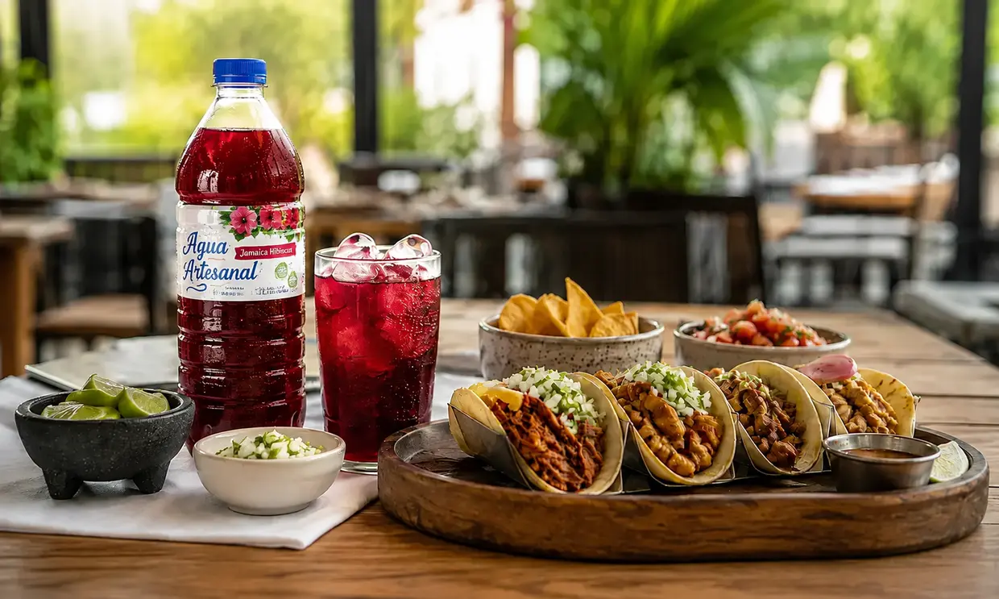

Dale a tus clientes
algo que quieran
volver a pedir
Aguas artesanales 100% naturales, listas para servir, para restaurantes, taquerías, marisquerías y negocios que buscan lo mejor para sus clientes.

NATURALES
LISTAS PARA SERVIR
+ TEMPORADA
POR WHATSAPP
NUESTROS SABORES
Aguas artesanales 100% naturales en PET reciclable de 1 L y 500 ml. Refrigeración 3–5 °C y tiempo garantizado de 3 a 10 días según el sabor.
HECHAS PARA
TU NEGOCIO
Complementa la experiencia gastronómica con una bebida artesanal lista para servir.
El acompañamiento perfecto para cada orden, sin preparación ni jarras.
Sabores que realzan el sabor del mar y agregan un plus a tu menú.

¿POR QUÉ ELEGIR AGUA ARTESANAL?
100% NATURALES
Aguas de sabor azucarada, con control de calidad e higiene y tiempo garantizado de 3 a 10 días.
YA PREPARADAS
Llegas, abres y sirves. Nada de batidoras, jarras ni personal extra para las bebidas.
VARIEDAD DE SABORES
10 sabores clásicos mexicanos más el de temporada, para diferentes gustos y menús.
PRESENTACIÓN IDEAL
PET reciclable de 1 L y 500 ml, pensado para la operación y para vender también para llevar.
ATENCIÓN DIRECTA
Pedidos y cotizaciones por WhatsApp, con atención cercana y directa.
PEDIR ES ASÍ DE FÁCIL
Una conversación directa para comenzar.
Elige tus sabores
Revisa el catálogo y elige los sabores y presentaciones que necesitas.
Escíbenos por WhatsApp
Inicia la conversación directamente con nuestro equipo.
Confirmamos tu pedido
Te ayudamos con disponibilidad, presentaciones y detalles.
Recibe tu pedido
La entrega y las condiciones se acuerdan directamente por WhatsApp.
RESOLVEMOS TUS DUDAS
Lo que más preguntan los negocios gastronómicos antes de pedir.
¿LISTO PARA OFRECER ALGO DIFERENTE?
Escíbenos por WhatsApp y recibe atención directa. Sin formularios, sin esperas.